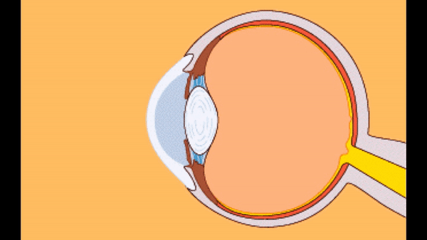
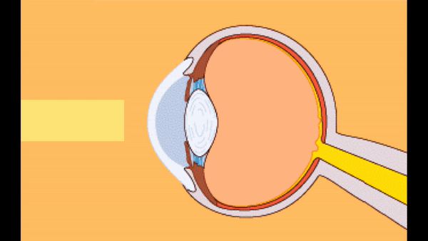
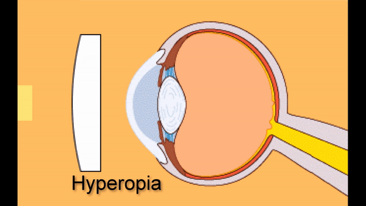
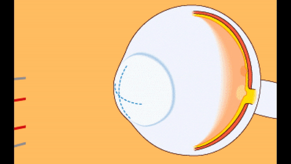
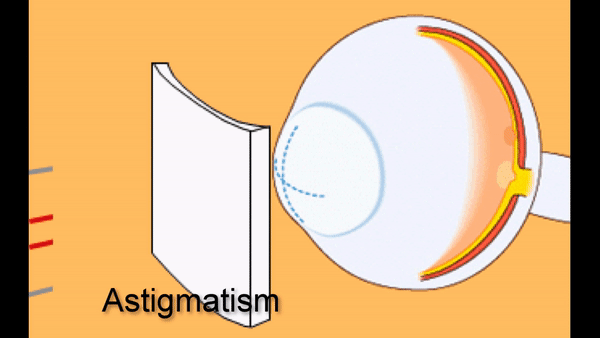
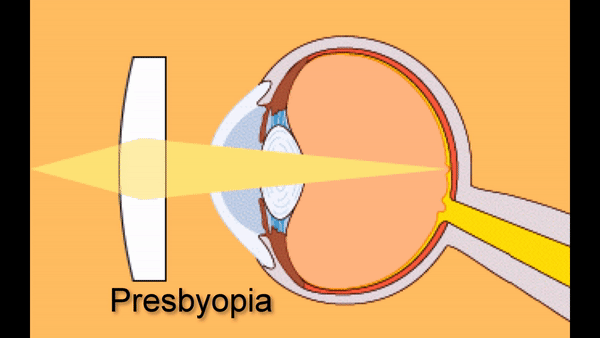
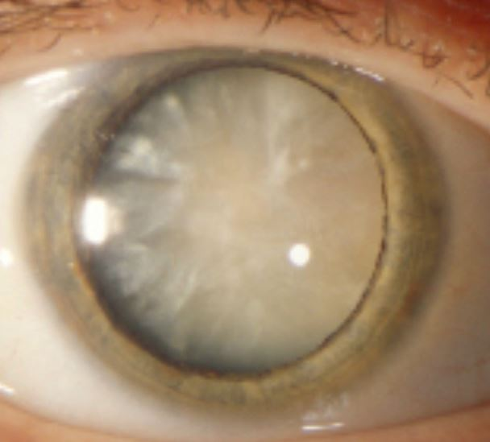

Uses the refractive power of the cornea (2/3) and lens (1/3)

If the refractive power of the cornea and lens are perfectly matched to the axial length of the eye, light coming from a distance of 20 feet (6 meters) or more will be focused on the fovea without need for an optical correction or change in the shape of the native lens, a condition called emmetropia
Unfortunately, most eyes are not emmetropic, and are said to have a refractive error (ametropia)
Focuses distant light rays in front of the retina because the eye’s refractive power is too strong
Corrected with a spherical concave spectacle or contact lens placed in front of the cornea, which brings light to a focus on the retina, or by surgical reshaping of the corneal surface (“refractive surgery”), which reduces corneal steepness and brings light to a focus on the retina


Hyperopia
Focuses distant light rays behind the retina because the eye’s refractive power is too weak
Corrected with a spherical convex spectacle or contact lens placed in front of the cornea or by surgical reshaping of the corneal surface to increase its steepness and allow light to focus on the retina


Astigmatism
Focuses distant light rays along a plane rather than at a point on the retina because the cornea has a warped surface
Corrected with a cylindrical spectacle or contact lens placed in front of the cornea, which brings light rays to a point focus on the retina, or by surgical reshaping of the cornea to eliminate corneal warp and bring light rays to a point focus on the retina

Presbyopia
Youthful eyes can increase the focusing power of the eyes for viewing objects placed at reading distance by contracting the ciliary muscle, loosening the zonules, and allowing the native lens to assume a more rounded shape, a physiologic process called “accommodation”
Aging eyes lose the ability to accommodate because stiffening of the native lens makes it unable to change its shape, a process called “presbyopia”
Presbyopia is corrected with a convex lens placed in front of the cornea to bring light rays coming from reading distance to a focus on the retina
This extra convex power is usually added to the bottom of a distance glasses prescription as a bifocal, trifocal, or multifocal

Ocular media imperfections
An irregular or opaque cornea or lens degrades the focus of light on the retina and causes impaired vision
Trap: failure of the optical segment causes indistinct vision but never causes blank or black areas in the panorama of vision (scotomas), which always derive from lesions of prechiasmal, chiasmal, or retrochiasmal portions of the visual pathway